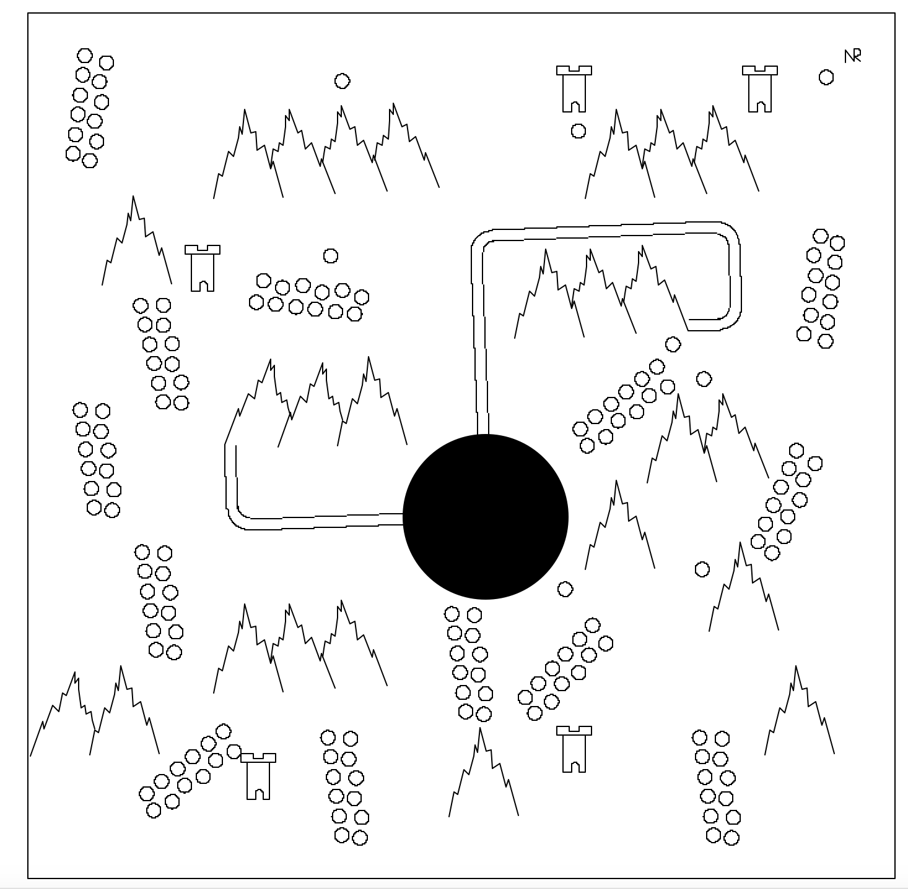

Project 1: Make an Art
Link to source codeI wanted to try and do something wierd, what if I used turtle graphics, to make a map
this took way to long to try and figure out, mostly because making everything to work was terrible
the hardest part about making this code was the mountain ranges, had 5 sperate functions to make it
imadge of the map
